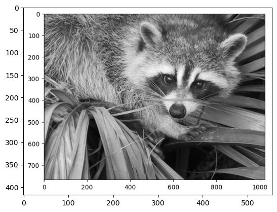
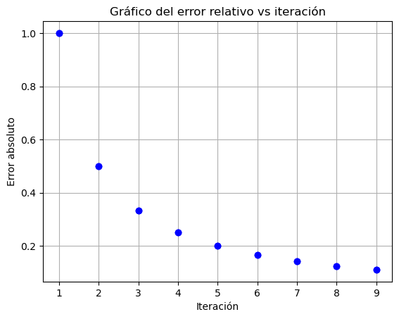
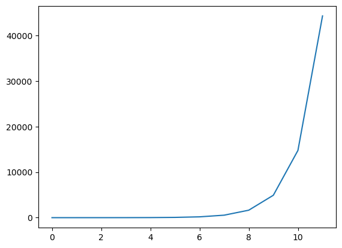
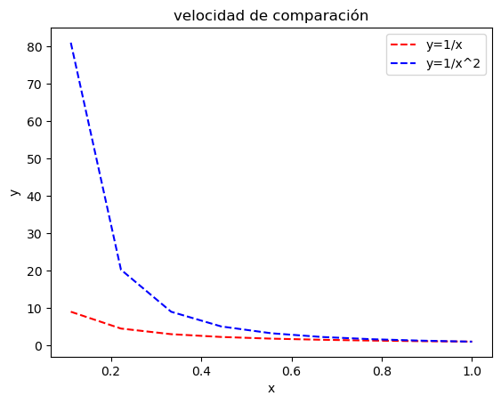

import numpy as np
a=np.matrix([[1, 2], [3, 4]])
a.shape(2, 2)
import numpy as np
a=np.matrix([[1, 2], [3, 4]])
a.shape(2, 2)# otra forma de imprimir una matriz
a = np.matrix('1 2; 3 4')
amatrix([[1, 2],
[3, 4]])#tomar la primera fila de la matriz
print(a[0])[[1 2]]print(a[0][:])[[1 2]]print(a[:,1])[[2]
[4]]# 1st argument --> numbers ranging from 0 to 9,
# 2nd argument, row = 2, col = 3
array = np.random.randint(10, size=(5, 5))
print(array)[[7 6 5 8 4]
[6 3 7 4 3]
[7 8 9 0 1]
[5 0 9 4 0]
[0 2 2 1 6]]array[2:,:]array([[7, 8, 9, 0, 1],
[5, 0, 9, 4, 0],
[0, 2, 2, 1, 6]])# escoger una submatriz de una matriz array
array[1:3, 1:3 ]array([[8, 7],
[0, 5]])# escojemos las columnas impares y filas pares
array[::2, 1::2]array([[6, 8],
[8, 0],
[2, 1]])# multiplicar dos matrices
A=np.array([[1,2],[3,4]])
B=np.array([[5,6],[7,8]])
A@Barray([[19, 22],
[43, 50]])
# Vector fila
vector_fila = np.array([1, 2, 3, 4, 5])
# Redimensionar a un vector columna
vector_columna = vector_fila[:, np.newaxis]
print(vector_columna)
vector_columna.[[1]
[2]
[3]
[4]
[5]]# Transpuesta de una matriz A.T
A.Tarray([[1, 3],
[2, 4]])# producto punto de dos vectores
a=np.array([1,2,3])
b=np.array([4,5,6])
print(a.dot(b))
print(np.dot(a,b))32
32# producto de un numero por un array
5 * aarray([ 5, 10, 15])# producto elemento a elemento
a*barray([ 4, 10, 18])# potenciacion de un array
a**2array([1, 4, 9])np.sin(a)array([0.84147098, 0.90929743, 0.14112001])#crear una matriz de ceros
A=np.zeros((3,3))
# crear una matriz de unos
B=np.ones((3,3))from PIL import Image
import numpy as np
import matplotlib.pyplot as plt
def imagen_a_matriz(ruta_imagen):
# Abrir la imagen
imagen = Image.open(ruta_imagen)
# convertir a blanco y negro
imagen = imagen.convert("L")
# Convertir la imagen a una matriz NumPy
matriz = np.array(imagen)
return matriz
# Ruta de la imagen que quieres convertir a matriz
ruta_imagen = "img.png"
# Llamar a la función para convertir la imagen a matriz
matriz_imagen = imagen_a_matriz(ruta_imagen)
# Imprimir la matriz resultante
print(matriz_imagen)
plt.imshow(matriz_imagen, cmap='gray') [[255 255 255 ... 255 255 255]
[255 255 255 ... 255 255 255]
[255 255 255 ... 255 255 255]
...
[255 255 255 ... 255 255 255]
[255 255 255 ... 255 255 255]
[255 255 255 ... 255 255 255]]<matplotlib.image.AxesImage at 0x7fbcb89f0ad0>
\(x_n=\{2-\frac{1}{n}\}\)
note que el límite de la sucesión es 2, Y el error absoluto esta determinado por \[e_n=|x_n-x|=\frac{1}{n}\]
y el erro relativo esta determinado por \[\epsilon_n={\frac{2}{n}}\]
\(x_n\) aproxima a \(x\) con un \(k\) dígitos decimales, si \(k\) es el mayor entero negativo tal que \[e_n\leq \frac{1}{2}\times 10^{-k}\]
\(x_n\) aproxima a \(x\) con un \(k\) cifras significativas, si \(k\) es el mayor entero negativo tal que \[\epsilon_n\leq \frac{10^{-k}}{2}\]
import pandas as pd
import matplotlib.pyplot as plt
# Crear un DataFrame vacío con las columnas deseadas
columnas = ["iteracion", "valor", "error absoluto", "error relativo"]
df = pd.DataFrame(columns=columnas)
# Imprimir el DataFrame vacío
print(df)Empty DataFrame
Columns: [iteracion, valor, error absoluto, error relativo]
Index: []for i in range(1,10):
df = df.append({"iteracion": i, "valor": 2-1/i, "error absoluto": np.abs(1/i), "error relativo": np.abs(2/i)}, ignore_index=True)
# Imprimir el DataFrame actualizado
print(df) iteracion valor error absoluto error relativo
0 1.0 0.000000 1.000000 0.010000
1 2.0 0.500000 0.500000 0.010000
2 3.0 0.666667 0.333333 0.010000
3 4.0 0.750000 0.250000 0.010000
4 5.0 0.800000 0.200000 0.010000
5 6.0 0.833333 0.166667 0.010000
6 7.0 0.857143 0.142857 0.010000
7 8.0 0.875000 0.125000 0.010000
8 9.0 0.888889 0.111111 0.010000
9 1.0 1.000000 1.000000 2.000000
10 2.0 1.500000 0.500000 1.000000
11 3.0 1.666667 0.333333 0.666667
12 4.0 1.750000 0.250000 0.500000
13 5.0 1.800000 0.200000 0.400000
14 6.0 1.833333 0.166667 0.333333
15 7.0 1.857143 0.142857 0.285714
16 8.0 1.875000 0.125000 0.250000
17 9.0 1.888889 0.111111 0.222222/tmp/ipykernel_74250/117203946.py:2: FutureWarning: The frame.append method is deprecated and will be removed from pandas in a future version. Use pandas.concat instead.
df = df.append({"iteracion": i, "valor": 2-1/i, "error absoluto": np.abs(1/i), "error relativo": np.abs(2/i)}, ignore_index=True)
/tmp/ipykernel_74250/117203946.py:2: FutureWarning: The frame.append method is deprecated and will be removed from pandas in a future version. Use pandas.concat instead.
df = df.append({"iteracion": i, "valor": 2-1/i, "error absoluto": np.abs(1/i), "error relativo": np.abs(2/i)}, ignore_index=True)
/tmp/ipykernel_74250/117203946.py:2: FutureWarning: The frame.append method is deprecated and will be removed from pandas in a future version. Use pandas.concat instead.
df = df.append({"iteracion": i, "valor": 2-1/i, "error absoluto": np.abs(1/i), "error relativo": np.abs(2/i)}, ignore_index=True)
/tmp/ipykernel_74250/117203946.py:2: FutureWarning: The frame.append method is deprecated and will be removed from pandas in a future version. Use pandas.concat instead.
df = df.append({"iteracion": i, "valor": 2-1/i, "error absoluto": np.abs(1/i), "error relativo": np.abs(2/i)}, ignore_index=True)
/tmp/ipykernel_74250/117203946.py:2: FutureWarning: The frame.append method is deprecated and will be removed from pandas in a future version. Use pandas.concat instead.
df = df.append({"iteracion": i, "valor": 2-1/i, "error absoluto": np.abs(1/i), "error relativo": np.abs(2/i)}, ignore_index=True)
/tmp/ipykernel_74250/117203946.py:2: FutureWarning: The frame.append method is deprecated and will be removed from pandas in a future version. Use pandas.concat instead.
df = df.append({"iteracion": i, "valor": 2-1/i, "error absoluto": np.abs(1/i), "error relativo": np.abs(2/i)}, ignore_index=True)
/tmp/ipykernel_74250/117203946.py:2: FutureWarning: The frame.append method is deprecated and will be removed from pandas in a future version. Use pandas.concat instead.
df = df.append({"iteracion": i, "valor": 2-1/i, "error absoluto": np.abs(1/i), "error relativo": np.abs(2/i)}, ignore_index=True)
/tmp/ipykernel_74250/117203946.py:2: FutureWarning: The frame.append method is deprecated and will be removed from pandas in a future version. Use pandas.concat instead.
df = df.append({"iteracion": i, "valor": 2-1/i, "error absoluto": np.abs(1/i), "error relativo": np.abs(2/i)}, ignore_index=True)
/tmp/ipykernel_74250/117203946.py:2: FutureWarning: The frame.append method is deprecated and will be removed from pandas in a future version. Use pandas.concat instead.
df = df.append({"iteracion": i, "valor": 2-1/i, "error absoluto": np.abs(1/i), "error relativo": np.abs(2/i)}, ignore_index=True)# Graficar la columna "Valor"
plt.plot(df['iteracion'], df['error absoluto'], marker='o',linestyle='none', color='b')
# Personalizar la gráfica
plt.title('Gráfico del error relativo vs iteración')
plt.xlabel('Iteración')
plt.ylabel('Error absoluto')
plt.grid(True)
Genere un codigo para aproximar la función
\[e^5 =\lim_{m\to \infty }S_m, \text{ donde } S_m=\sum_{n=0}^{m} \frac{5^n}{n!}\]
La propagación del error es un concepto fundamental en métodos numéricos y en cualquier tipo de cálculo que involucre mediciones y operaciones matemáticas. Se refiere a cómo los errores en las mediciones de los datos se propagan a través de los cálculos y afectan el resultado final.
Se quiere calcular el área de un rectángulo con base \(b\) y altura \(h\). Se miden las dimensiones del rectángulo y se obtienen los valores \(b = 2.5 \pm 0.1\) y \(h = 3.0 \pm 0.1\). El área del rectángulo es \(A = b \times h\). ¿Cuál es el valor de \(A\) y cuál es su incertidumbre?
Note que aquí se la incertidumbre seria de 0.01. Ahora si calculamos el perimetro del rectangulo, el cual es \(P = 2b + 2h\), la incertidumbre seria de 0.4. Esto se debe a que el error se propaga a traves de la suma.
** Buscamos crear algoritmos donde el error se propague de manera controlada. **
Supongamos que queremos resolver el siguiente sistema de ecuaciones lineales:
\[\begin{matrix}7x + 2y = 6 \\ 1x + 0.28y = 2\end{matrix}\]
Note que la solución exacta del problema es \(x=[58,-200]\)
Compruébelo
Ahora si supongamos que el sistema tiene un pequeño error de medición, así el sistema correcto es
\[\begin{matrix}7x + 2y = 6 \\ 1x + 0.285y = 2\end{matrix}\]
Observamos que un ligero cambio en la matriz de coeficientes del sistema conlleva cambios significativos en la solución. En este caso particular, las dos soluciones son exactas, ya que solo hay que resolver este problema de manera directa. Sin embargo, si dicha matriz de coeficientes se involucra en un método iterativo y el vector de soluciones, x, debe calcularse en cada iteración, pequeños errores de redondeo en algunos de los coeficientes pueden amplificarse y propagarse, lo que resultaría en una solución final incorrecta proporcionada por el método.
En situaciones como esta, se clasifica el problema como mal condicionado. Resolver problemas mal condicionados es complejo y, en muchas ocasiones, requiere una reevaluación del enfoque para evitar depender de términos que podrían verse afectados de manera significativa por los errores de redondeo.
Supongamos que queremos aproximar la función \(sin(\pi)\) usando la serie de taylor.
Tarea leer el siguiente articulo notación O grande
Escribamos un algoritmo para calcular \[\sum_{i=1}^{N} x_i\] para esto podemos usar un seudocódigo que es una forma de escribir algoritmos de manera informal, en este estableceremos las siguientes reglas: 1. El algoritmo debe ser escrito en lenguaje natural. 2. El algoritmo debe ser escrito en orden. 3. El algoritmo debe ser escrito de manera clara y concisa. 4. Las tareas grandes deben ser divididas en tareas pequeñas, llamadas pasos. 5. Cuando usemos \(.\) indica el fin de un paso. 6. Cuando usemos \(;\) separa tareas dentro de un paso. 7. Debemos establecer los elementos de entrada y de salida del algoritmo.
Entrada \(N,x_1,x_2,...,x_N\)
Salidaa Suma de los elementos de la lista \(y\)
Paso 1. Establezca \(y=0\)
Paso 2. Para cada \(i\) en el rango \([1,N]\) haga \(y=y+x_i\)
Paso 3. Devuelva \(y\)
Nos interesa crear métodos numéricos que sean estables, es decir, que no amplifiquen los errores de redondeo. Para analizar la estabilidad de un método numérico, se puede hacer un análisis de estabilidad, que consiste en analizar el error cometido en cada paso del método numérico y calcular el orden de magnitud del error total cometido.
Definición Suponga que \(E_0\) denota un error inicial y que \(E_n\) denota el error cometido en el paso \(n\) del método numérico. Entonces, el método numérico es estable si existe una constante \(C\) independiente de \(n\) tal que
\[E_n \approx C n E_0,\] en este caso se establece que el error es de crecimiento lineal. Ahora bien, si se encuentra \(C>1\) tal que \[E_n \approx C^n E_0,\] se dice que el error es de crecimiento exponencial.
Ejemplo
Sea la ecuación recursiva
\[p_{n}=\frac{10}{3}p_{n-1}-p_{n-2},\ \text{para } n=2,3,...\] tiene solución \[p_{n}=c_1\Big(\frac{1}{3}\Big)^{n}+c_23^{n}\]
import matplotlib.pyplot as plt
p=[1,1]
for j in range(10):
p.append(10/3*p[-1]-p[-2])
plt.plot(p)
Definición Suponga que \(\{\beta_n\}\) es una sucesión cuyo valor de convergencia es cero y que \(\{\\alpha_n\}\) es una sucesión que converge a \(\alpha\). Si existe una constante positiva \(K\) tal que
\[|\alpha_n - \alpha| \leq K|\beta_n|\]
Entonces decimos que \(\{\\alpha_n\}\) converge a \(\alpha\) con la rapidéz de convergencia de \(O\Big(\{\beta_n\}\Big)\). Esta expresión se ller O mayscula de \(\{\beta_n\}\). Se indica escribiendo \[\alpha_n = \alpha + O\Big(\{\beta_n\}\Big)\]
Sean las sucesiones \(\{a_n\}\) y \(\{b_n\}\) definidas por
\[a_n = \frac{n+1}{n^2} \quad \text{y} \quad b_n = \frac{n+3}{n^3}\]
note que ambas sucesiones convergen a cero. Sea \(\hat{a}_n=\frac{1}{n}\) y \(\hat{b}_n=\frac{1}{n^2}\)
\[|a_n-0|=\frac{n+1}{n^2}\leq \frac{n+n}{n^2}=2\frac{1}{n}=2\hat{a}_n\]
y
\[ |b_n-0|=\frac{n+3}{n^3}\leq \frac{n+3n}{n^3}=4\frac{1}{n^2}=4\hat{b}_n\]
de modo que
\[a_n=0+O\Big(\frac{1}{n}\Big) \quad \text{y} \quad b_n=0+O\Big(\frac{1}{n^2}\Big)\]
Esto quiere decir que la rápidéz de convergencia de \(\{b_n\}\) es mayor que la de \(\{a_n\}\)
import numpy as np
import matplotlib.pyplot as plt
x=np.linspace(0,1,10)
y1=1/x
y2=1/x**2
plt.plot(x,y1,'r--',x,y2,'b--')
plt.xlabel('x')
plt.ylabel('y')
plt.title('velocidad de comparación')
plt.legend(['y=1/x','y=1/x^2'])
plt.show()/tmp/ipykernel_101551/3491951731.py:4: RuntimeWarning: divide by zero encountered in divide
y1=1/x
/tmp/ipykernel_101551/3491951731.py:5: RuntimeWarning: divide by zero encountered in divide
y2=1/x**2
Suponga que \(\lim_{h\to 0}G(h)=0\) y \(\lim_{h\to 0}F(h)=L\). Si existe una constate positiva \(K\) tal que
\[|F(h)-L|\leq K|G(h)|\]
para todo \(h\) suficientemente pequeño \(0\), entonces
\(F(h)=L+O\Big(G(h)\Big)\).
Sabemos que por la serie de Taylor
\[\cos(h)=1-\frac{1}{2}h^2+\frac{1}{24}h^4\cos(\xi(h))\] Note que \(\cos\xi(h)\leq 1\) entonces
\[\frac{1}{24}h^4\cos(\xi(h)) \leq \frac{1}{24}h^4\]
Por lo tanto tenemos que
\[\cos(h)+\frac{1}{2}h^2=1+O\Big(h^4\Big)\]
Esto indica que \(\cos(h)+\frac{1}{2}h^2\) converge a cero tan rápido como \(h^4\).